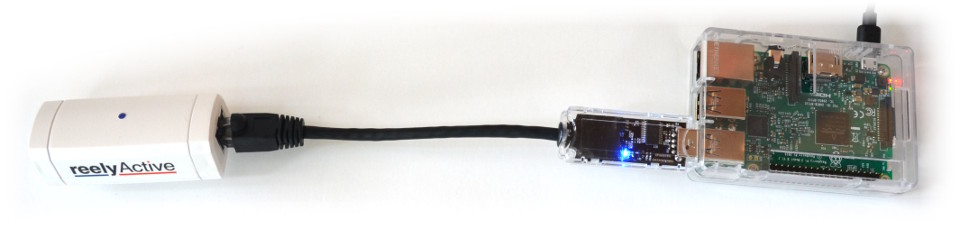
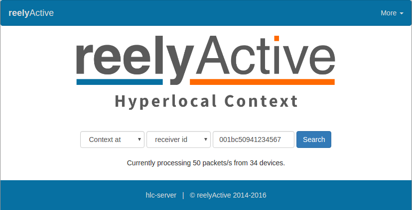

In order for reelceivers to communicate their data over a network and/or the Internet, they need to connect via a hub.
A Pi hub provides power to the reelceivers and converts their serial data packets into IP data packets using our open source software for Node.js. And, if your Pi has an integrated BLE radio, it can even work standalone!
At the Eleventh HOPE conference, we showed off a standalone Raspberry Pi 3 Bluetooth Low Energy (BLE) sniffer to the Hackaday crew, which they found cool enough to share with their readers.
You'll find instructions below to replicate the setup and more, making use of the integrated BLE radio. Just add power and network and you have yourself a versatile sub-$100 tool/toy!
Read the Hackaday PostYou'll need both a Raspberry Pi and our minimal starter kit, unless you intend to run standalone on a Pi with an integrated BLE radio (ex: Pi 3). In that case, our starter kit is optional.
Both items can be purchased by following the links below. If you prefer to get your hands dirty with the reelyActive kit, you can also Build your own USB Hub and purchase the reelceiver.
Assuming you're starting with an out-of-the-box Pi, the following preparation is required.
The Pi's filesystem resides on an SD card. If your Pi came with a prepared SD card, lucky you, you get to skip this step!
The Quick Start Guide suggests an 8GB class 4 SD card, which we encourage you to purchase from an established vendor. If the card doesn't come formatted as FAT32, you'll need to do so (read the INSTRUCTIONS-README.txt included in the NOOBS ZIP file).
Download NOOBS and unzip the contents to the root folder of the SD card. You're all set!
Connect the following to your Pi:
Then power the Pi through a high-quality USB power source (ex: phone charger). Follow the instructions on screen to install the Raspbian operating system. This procedure will take some time. Perhaps enjoy a slice or two of delicious raspberry pie while you wait?
After Raspbian boots, connect the Pi to the Internet via either WiFi or Ethernet using the on-screen tools. The Pi is ready!
Raspbian will likely include an old version of Node.js. Here we'll provide the instructions for installing the latest LTS (long term support version) which will be required. Open a terminal on the Pi and execute the following in order (optionally change 4.4.7 below throughout to the latest LTS version as indicated here):
wget https://nodejs.org/dist/v4.4.7/node-v4.4.7-linux-armv7l.tar.xz
tar -xf node-v4.4.7-linux-armv7l.tar.xz
sudo mv node-v4.4.7-linux-armv7l /usr/local/node
cd /usr/local/bin
sudo ln -s /usr/local/node/bin/node node
sudo ln -s /usr/local/node/bin/npm npm
Close and re-open the terminal. Confirm that v4.4.7 appears when you run node -v. Node.js is now installed.
Now we have to choose among the many options of open source software to run! You can install any and all of the tab-selectable options below, but you'll typically run only one at a time.
Select this option to run the Hackaday-style suite of software, standalone (requires a Pi with integrated BLE).
Open a terminal on the Pi and execute the following in order:
mkdir ~/reelyActive
cd ~/reelyActive
git clone https://github.com/reelyactive/pi-suite.git
cd pi-suite
npm install
This will fetch and install the open source code from our GitHub to a folder called reelyActive/pi-suite. You can check out the code via the button below.
Open a terminal and run the following command:
sudo node /home/pi/reelyActive/pi-suite/pi-suite
Within a few seconds you should see the a console message indicating the id to query the receiver. Note this id.
The following (optional) steps configure the Pi to run pi-suite automatically (in the background) on boot, based on this tutorial. This is useful for a standalone, headless installation where power interruptions may occur.
First we'll install the forever package globally, which allows us to keep our programs running forever, restarting them automatically should they crash. Open a terminal on the Pi and execute the following in order:
sudo npm install forever -g
cd /usr/local/bin
sudo ln -s /usr/local/node/bin/forever forever
Open a terminal on the Pi and run the following command:
sudo nano /etc/rc.local
Edit the file by adding sudo forever start /home/pi/reelyActive/pi-suite/pi-suite.js & above exit 0. Then press Ctrl-X to exit, and Y to save.
Reboot and confirm that, once Raspbian boots, there is activity on the starter kit USB hub's LED indicating that execution of the progam has started.
If your Pi is connected to a keyboard, mouse and display, browse to http://localhost to see the Hyperlocal Context page.
Otherwise, browse to your Pi over the network via its IP address. For instance, if the Pi's IP address is 12.34.56.78 you would browse to http://12.34.56.78. To learn the Pi's IP address, run ifconfig in the console.
The Hyperlocal Context page will show the number of BLE packets and devices it is processing, and will allow you to query the BLE receiver on your Pi. In the search bar, enter the id you noted from the console earlier.
This query will return the most recent BLE packet of each device received by the Pi.
This query will return a contextual representation of all the devices detected by the Pi.
The following (optional) steps configure the Pi to open a full-screen browser on boot. This is useful for a standalone Pi connected to a display.
Open a terminal on the Pi and run the following command which installs a package that facilitates running the browser in full-screen mode:
sudo apt-get install matchbox-window-manager
Run the following command:
sudo nano /etc/rc.local
Edit the file by adding sleep 30; sudo xinit /home/pi/reelyActive/pi-suite/display & above exit 0 (just below the optional Auto-Run on Boot line added earlier)
Then configure the Pi to boot into a console. Run from the command line:
sudo raspi-config
Then from the Boot Options menu select Console Autologin. Select Finish and then accept the option to reboot.
Observe that the Pi boots into a console, pauses, and then opens the browser full-screen. It should do this after every power cycle. You can change the default boot page by editing the /pi-suite/display file.
The code that is running also enables the following features:
Easily create your own custom dashboard using the socket.io feed and our dashboard-template-angular code. And of course, don't hesitate to get in touch if you'd like to share your complementary projects.
Select this option to stream the real-time data to a remote server such as Pareto (a trial of which is included with the purchase of a starter kit).
Open a terminal on the Pi and execute the following in order:
mkdir ~/reelyActive
cd ~/reelyActive
git clone https://github.com/reelyactive/pi-relay.git
cd pi-relay
npm install
This will fetch and install the open source code from our GitHub to a folder called reelyActive/pi-relay. You can check out the code via the button below.
With the minimal starter kit connected to the USB port of the Pi, open a terminal and run the following command:
node /home/pi/reelyActive/pi-relay/pi-relay
Within a few seconds you should see a stream of decodings printed to the console.
The following (optional) steps configure the Pi to run pi-relay automatically (in the background) on boot, based on this tutorial. This is useful for a standalone, headless installation where power interruptions may occur.
Open a terminal on the Pi and run the following command:
sudo nano /etc/rc.local
Edit the file by adding node /home/pi/reelyActive/pi-relay/pi-relay & above exit 0. Then press Ctrl-X to exit, and Y to save.
Reboot and confirm that, once Raspbian boots, there is activity on the starter kit USB hub's LED indicating that execution of the progam has started.
Our starter kits include a three-month trial of our Pareto platform which is the easiest way to put your data to good use. Also, if you build your own unique hub and would like to share your project, please get in touch!